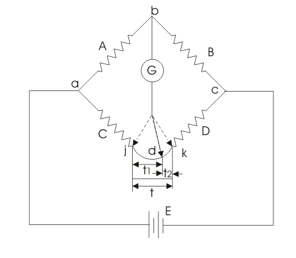
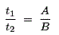
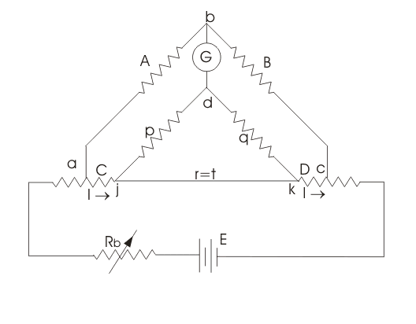
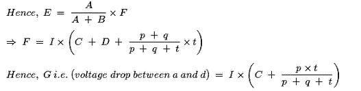
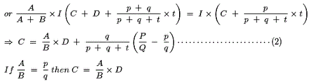
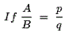

Before we introduce Kelvin bridge, it is very essential to know what is the need of this bridge, though we have Wheatstone bridge which is capable of measuring electrical resistance accurately as it gives accuracy of 0.1%. To understand the need of Kelvin bridge let us categorize the electrical resistances on the basis of view point of measurement:
Electrical resistances are classified as follows:
(a) High resistance: under this category resistance is greater than 0.1 M ohm.
(b) Medium resistance: under this category resistance is ranging from 1 ohm to 0.1M ohm.
(c) Low resistance: under this category resistance value is lower than 1 ohm.
Now the logic of doing this classification is that if we want to measure electrical resistance, we have to use different devices for different categories. It means if the device is used in measuring the high resistance gives high accuracy, it may or may not give such high accuracy in measuring the low value of resistance. So, we have to apply our brain to judge what device must be used to measure a particular value of electrical resistance. However there are other kind of methods also like ammeter-voltmeter method, substitution method etc but they give large error as compared to bridge method and are avoided in most of the industries. Now let us again recall our classification done above, as we move from top to bottom the value of resistance decreases hence, we require more accurate and precise device to measure the low value of resistance. One of the major drawback of the Wheatstone bridge is that, it can measure the resistance from few ohm to several mega ohm but to measure low resistance it gives significant error. So, we need some modification in Wheatstone bridge itself, and the modified bridge so obtained is Kelvin bridge, which is not only suitable for measuring low value of resistance but has wide range of applications in the industrial world.
Let us discuss few terms that will be very helpful to us in studying the Kelvin Bridge.
(a) Bridge : They are usually consists of four arms, balance detector and source. They works on the concept of null point technique. They are very useful in practical applications because there is no need of making the meter precise linear with an accurate scale. There is no requirement of measuring the voltage and electric current, the only need is to check the presence or absence of electric current or voltage. However the main concern is that during the null point meter must be able to pick up fairly small electric current. A bridge can be defined as the voltage dividers in parallel and the difference between the two dividers is our output. It is highly useful in measuring components like electrical resistance, capacitance, inductor and other parameter of circuit. Accuracy of any bridge is directly related to bridge components.
(b) Null point: It can be defined as the point at which the null measurement occurs when the reading of ammeter or
voltmeter is zero.
Kelvin Bridge Circuit
As we have discussed that Kelvin Bridge is a modified Wheatstone bridge and provides high accuracy especially in the
measurement of low resistance. Now the question that must be arise in our mind that where do we need the modification. The answer to this question is very simple, it is the portion of leads and contacts where we must do modification because of these there is an increment in net resistance.
Let us consider the modified Wheatstone bridge or Kelvin bridge circuit given below:

Here, t is the resistance of the lead.
C is the unknown resistance.
D is the standard resistance (whose value is known).
Let us mark the two points j and k. If the galvanometer is connected to j point the resistance t is added to D which
results in too low value of C. Now we connect galvanometer to k point it would result in high value of unknown resistance C.
Let us connect the galvanometer to point d which is lying in between j and k such that d divides t into ratio t1 and t2, now from the above figure it can be seen that

Then also the presence of t1 causes no error, we can write,

Thus we can conclude that there is no effect of t (i.e. resistance of leads). Practically it is impossible to have such situation however the above simple modification suggests that the galvanometer can be connected between these points j and k so as to obtain the null point.
Kelvin Double Bridge
Why it is called double bridge?? it is because it incorporates the second set of ratio arms as shown below:

In this the ratio arms p and q are used to connect the galvanometer at the correct point between j and k to remove the effect of connecting lead of electrical resistance t. Under balance condition voltage drop between a and b (i.e. E) is equal to F (voltage drop between a and c)

For zero galvanometer deflection, E = F

Again we reaches to the same result i.e. t has no effect. However equation (2) is useful as it gives error when,

 by
by